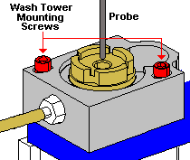

Adjusting Reagent Pipettor
This procedure describes how to mechanically adjust the position of the reagent pipettor relative to the wash tower, the reagent storage module, and the vertical home position prior to performing alignments on the reagent pipettor.
Required Materials:
- No special tools are required.
The adjustments for this module include:
- adjust reagent pipettor to reagent storage pack positions
- adjust wash tower to reagent pipettor position
- adjust reagent pipettor to vertical home position
- From the Main Menu select Diagnostics > Device Diagnostics > Mechanics > Alignments.
-
Adjust reagent pipettor to reagent storage module position.
If you determine that the current adjustment is correct for the pipettor, you might not have to complete this entire step for that pipettor.
- Select Motors > Disable All.
- Center all reagent pipettors over the reagent pack front position.
-
Using the z-pulley, slowly lower the reagent pipettors. Compare the spacing over the reagent pack access hole of reagent pipettors pairs 1 and 2 to 3 and 4. (The DxI 600 instrument does not have reagent pipettor 3 and 4.)
If each pipettor pair is evenly spaced over the reagent pack access hole, then the front adjustment is correct.
- Center all reagent pipettors over the reagent pack rear position.
-
Using the z-pulley, slowly lower the reagent pipettors. Compare the spacing over the reagent pack access hole of reagent pipettors pairs 1 and 2 to 3 and 4. (The DxI 600 instrument does not have reagent pipettor 3 and 4.)
If each pipettor pair is evenly spaced over the reagent pack access hole, then the rear adjustment is correct.
- Select Motors > Enable All.
-
Determine if the current adjustment is correct.
- If the front and rear holes adjustments are correct, this adjustment to the storage module is complete for this pipettor. Adjust reagent pipettor to reagent storage module for the remaining reagent pipettors
- If the front and rear holes adjustments are incorrect, continue with this adjustment.
- From the Main Menu, select Diagnostics > Device Diagnostics > Mechanics > Alignments.
- Select Reagent Pipettor 1 as the device, and then select Motors > Disable All.
-
Loosen the four screws securing the reagent pipettor mounting tower to the base plate.
Each tower has two reagent pipettors.
- Adjust the mounting tower left or right so that both pairs of reagent pipettor probes are evenly spaced over the front and rear reagent pack access holes.
- Tighten the screws securing the reagent pipettor mounting tower to the base plate.
- To verify the adjustment for this reagent pipettor, go back to the beginning of this step and determine if the current adjustment is correct.
- Adjust reagent pipettor to reagent storage module for the remaining reagent pipettors.
-
Adjust wash tower to reagent pipettor position.
If you determine that the current adjustment is correct for the pipettor, you might not have to complete this entire step for that pipettor.
- From the Main Menu, select Diagnostics > Device Diagnostics > Mechanics > Alignments.
- Select Reagent Pipettor 1 as the device, and then select Motors > Disable All.
- Move the reagent pipettor probe to a position slightly above the wash tower.
- Verify that the probe tip is centered over the wash tower center hole.
-
Determine if the current adjustment is correct.
- If the probe tip is centered, this adjustment to the wash tower is complete for this pipettor. Adjust wash tower to reagent pipettor for the remaining reagent pipettors.
- If the probe tip is not centered, continue with the adjustment.
-
Loosen the wash tower mounting screws securing the wash tower to the module.

- Adjust the location of the wash tower until it is centered under the reagent pipettor probe tip.
- Tighten the wash tower mounting screws.
- To verify the adjustment for this reagent pipettor, go back to the beginning of this step and determine if the current adjustment is correct.
- Adjust wash tower to reagent pipettor for the remaining reagent pipettors.
-
Adjust reagent pipettor to z-home position.
- Move the reagent pipettor probe to the uppermost position.
- Enable the reagent pipettor motors.
- Loosen the attachment screw on the index wheel (located on the rear end of the upper guide rod).
- Rotate the index wheel so that the square hole in the wheel is centered in the sensor.
- Tighten the attachment screw on the index wheel.
- Home the reagent pipettor and verify proper homing.
- Adjust reagent pipettor to z-home position for the remaining reagent pipettors.
-
If any adjustments were made, perform the required alignment tasks.
- For instruments with serial number 602697 and 900568 and higher, confirm all reagent pipettor nest to reagent pipettor adjustments are complete.
Note: Refer to the RS: Adjusting Reagent Pipettor Nestprocedure.
- For instruments with serial number 602696 and 900567 and lower:
- Confirm that the reagent gripper alignments to the reagent pipettor nests are completed.
Note: Refer to the RS: Aligning Reagent Gripper procedure
- Complete all steps to the reagent pipettor alignments.
Note: Refer to the RP: Aligning Reagent Pipettor procedure
- Verify incubator and Sample pick-and-place to reagent carriage alignments.
Note: Refer to the P&P: Aligning Pick-and-Place Module procedure
- Confirm that the reagent gripper alignments to the reagent pipettor nests are completed.
- For instruments with serial number 602697 and 900568 and higher, confirm all reagent pipettor nest to reagent pipettor adjustments are complete.
-
Verify system operation.
-
Perform system verification as stated in the Verification of Service Repair document .
Refer to the Admin: Verification of Service Repair document.
-
Perform system verification as stated in the Verification of Service Repair document .